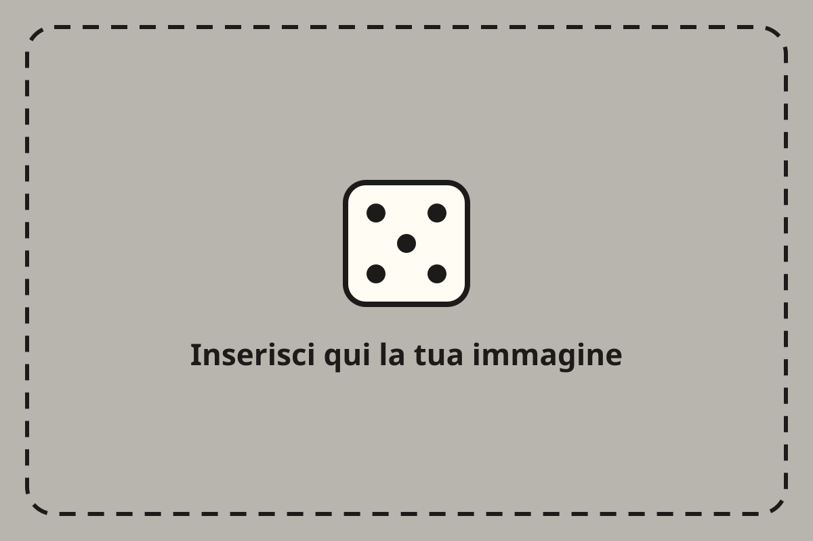

Titolo del carosello su due o tre righe

Scorri →

Qui va il testo, con una parola evidenziata. Frasi corte, una idea per slide, come se parlassi a un amico al tavolo da gioco.
Parola chiave: spiegazione di tre o quattro righe che racconta il punto in modo semplice e diretto, senza gergo.
Parola chiave: testo di cinque o sei righe che spiega il punto. Tieni le frasi corte e vai dritto al sodo, la battuta arriva dopo il dato.
Scrivilo nei commenti!